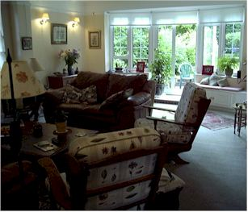
This is the living room at Scott & Dina's - very pleasant

I spent a lot of time out here. The flowers were beautiful and the weather was perfect!

The Phillips office in Woking

A hotel viewed from the Thames.


Big Ben (inside the tower)

The houses of Parliament

The London Eye and the Aquarium
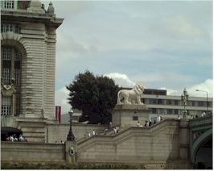
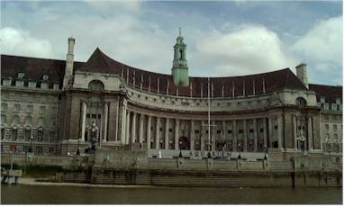
The Aquarium

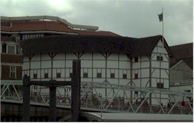
A reconstruction of Shakespeare's Globe Theater
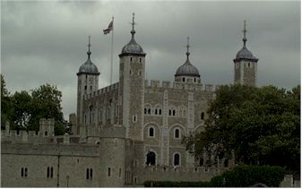
The Tower of London
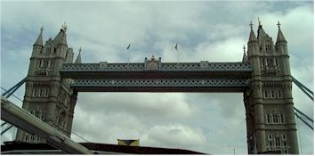
The Tower Bridge
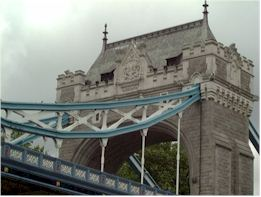
Close-up of part of the Tower Bridge
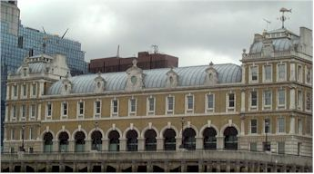
Used to be a fish market, now used for offices
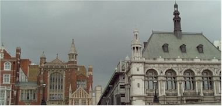

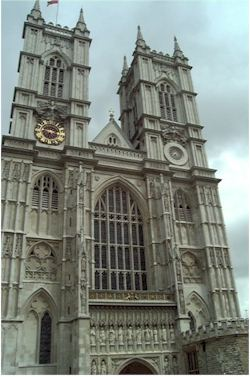
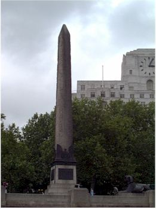
The Queen's Obelisk "relocated"' from Egypt
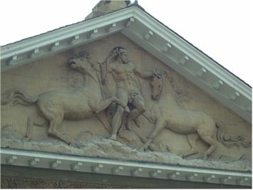
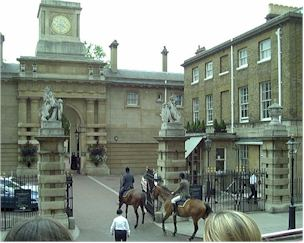


Who knew London had so many leaning structures? (OK, so I won't win 'Photographer of the Year' with these shots!)
 At the British Museum
At the British Museum
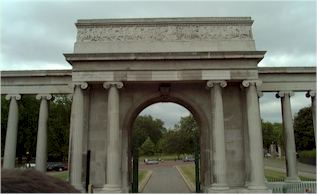
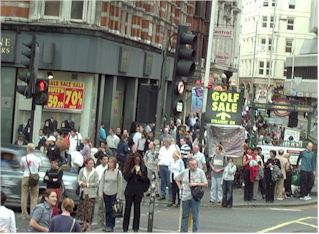
A typical London street
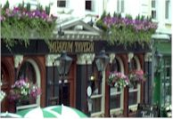
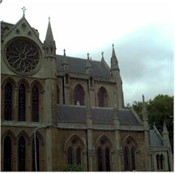
Saturday, June 30 Scott, Dina, and I had a wonderful breakfast of strawberry crepes and then we headed out to spend the day at Kew Gardens. It was very nice!

Shots of Dina & myself on the tour bus

Nice shot of the happy couple in front of the Pagoda

A strange coconut-like thing which had a cluster of small bananas on top. Very different!

Me under a giant cedar tree
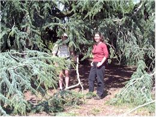
Me at the same tree with a strange man creeping up behind me!(And I do mean strange!!)
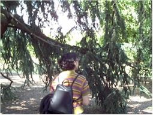
Yes, we're still at the same tree. This time Dina is under it.
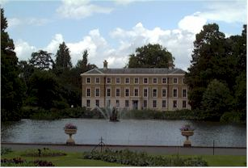
More views of Kew Gardens

The largest lily pads you can imagine. Scott is across the way reading all about them.


This was the Criterion Theatre, where I went to see a play on Saturday night. I saw "The Complete Works of Shakespeare (Abridged)" by the Reduced Shakespeare Company. The play was very funny and I also purchased a very tasteful t-shirt - it has a picture of Shakespeare and the caption, "I Love My Willy". I then toured several pubs near the Leister Square / Picadilly Circus area, and even wandered into a dance club for awhile to see what the night life is like in London. I wandered around too long, however, as I missed the last train back to Guilford. I had to spend 45 minutes waiting on a train to Woking, where I then managed to share a cab back to Guilford with some nice people. I finally made it back at about 2:30 am - quite exhausted!
Sunday we sat on the patio and enjoyed the sun, then went to a nearby pub for a very nice lunch. Then I headed back to Norway.